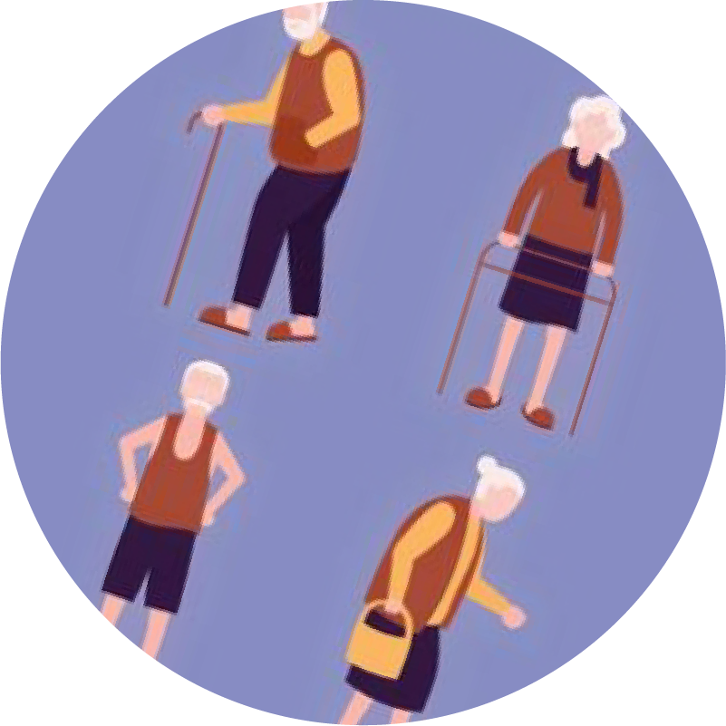
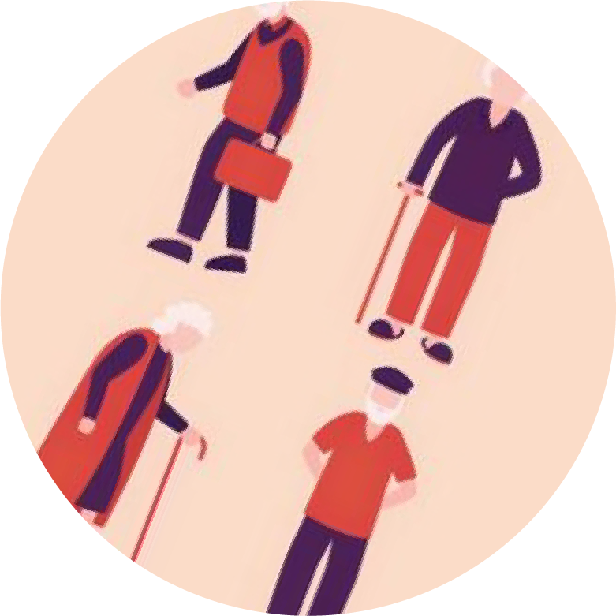
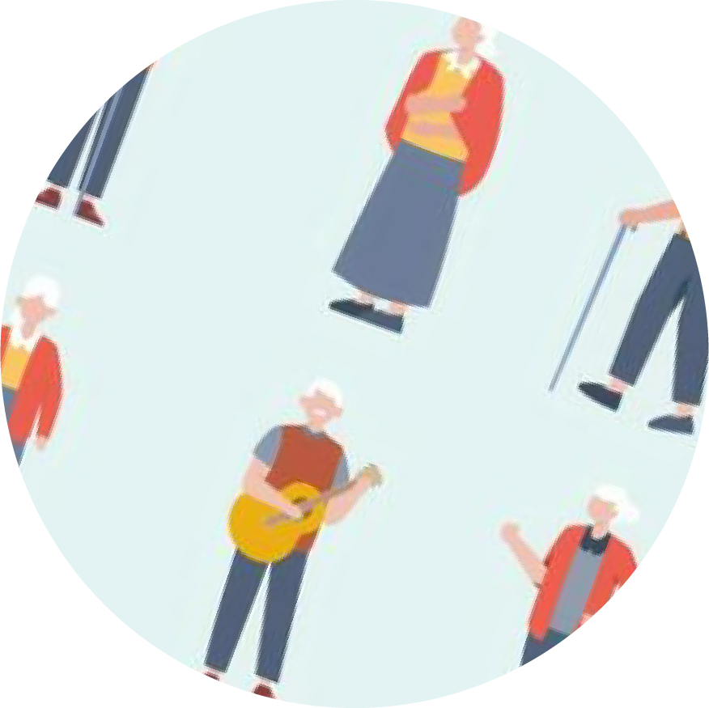

關於失智症
失智症，述為一種嚴重程度不同且有多種致病亞型的主要神經認知障礙，國際疾病分類也將 失智症歸類為神經認知障礙，屬於腦部疾病的一種，此症導致思考能力和記憶力長 期而逐漸地退化，並使個人日常生活活動受到影響

智癒新力量
為因應高齡化社會失智人口快速增加，本部委託國家衛生研究院進行「全國社區失智症流行病 學調查」，執行期間為民國109年至112年，調查發現近期老人罹患失智症的機率大幅上升，因為失智症無法痊癒，導致許多人感到恐慌，或不知道要怎麼預防照護
關於失智症
失智症，述為一種嚴重程度不同且有多種致病亞型的主要神經認知障礙，國際疾病分類也將 失智症歸類為神經認知障礙，屬於腦部疾病的一種，此症導致思考能力和記憶力長 期而逐漸地退化，並使個人日常生活活動受到影響
危險因子
多數失智症都是先天的因素加上後天的環境所造成，因此就算無法改變先天的因素，仍可以藉由 改善後天的環境因素（如飲食、生活習慣等）來降低失智症風險。
防護因子
絕大多數的失智症雖然無法治癒，但我們能做的，是將輕度失智的時間延長，延緩其退化的速 度。曾有患者10年間一直維持輕度失智的狀態，能自理日常生活，對家人也不至於造成負擔。 想要預防失智症，或是延緩退化，究竟有哪些錦囊妙計？
失智人口數將持續攀升
依據本調查65歲以上老年人口之年齡別失智症盛行率，推估113年65歲以上失智症人口數約35萬人；120年將 逾47萬人；130年65歲以上失智症人口數近68萬人，顯示未來社區長者失智症人口數推估結 果，有逐年攀升趨勢。面對未來增加的失智照護人口，
因應計畫
衛福部表示將持續精進失智照護資源之運用，發展更多元化的失智症 防治照護對策，以及加強宣導失智症相關識能等，使失智症及早確診以獲得適時照護與支持，維 持良好生活品質。
失智症類型盛行率具相關性報告
本調查結果有關失智症之類型分布前三名依序為 阿茲海默型失智症(Alzheimer's disease)占 56.88% 血管型失智症(Vascular dementia)占22.91% 及 巴金森氏症失智症(Parkinson disease dementia, PDD) 占7.12% 年齡越高失智症盛行率越高。
療癒時光活動日期
衛福部近期推出許多在 今年5月的活動，讓家中的長輩能夠共同參與 活動內容如下:
5月3日 上午7:00-8:00 健康早安操
5月7日 下午2:00-5:30 益智棋藝賽
5月11日 下午4:00-5:00 手工羊毛氈
5月18日 上午10:00-12:00 電影賞析
5月25日 上午7:00-8:00 健康早安操
5月29日 下午5:00-8:00 團康活動
療癒專區
近期衛福部活動開始預約啦!
所有活動皆為免費，活動對象主要以家中長輩為主，
活動內容十分豐富，數量有限要搶要快喔
活動地點:療癒圖書館
5月3日早安健康操
5月7日益智棋藝賽
5月11日手工羊毛氈
留言告訴我們你的想法或建議吧
暱稱
電子郵件
留言區
智癒機器人
您好~很高興為您服務
您好~很